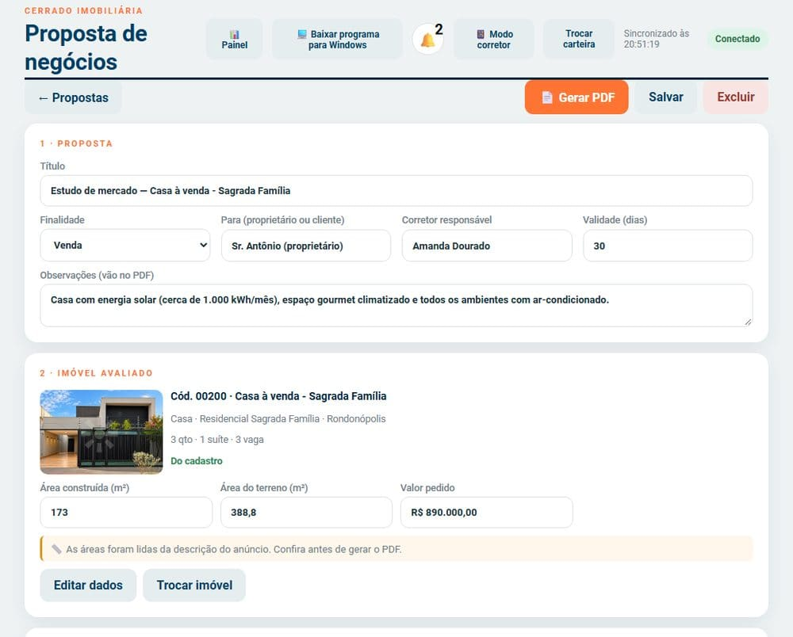
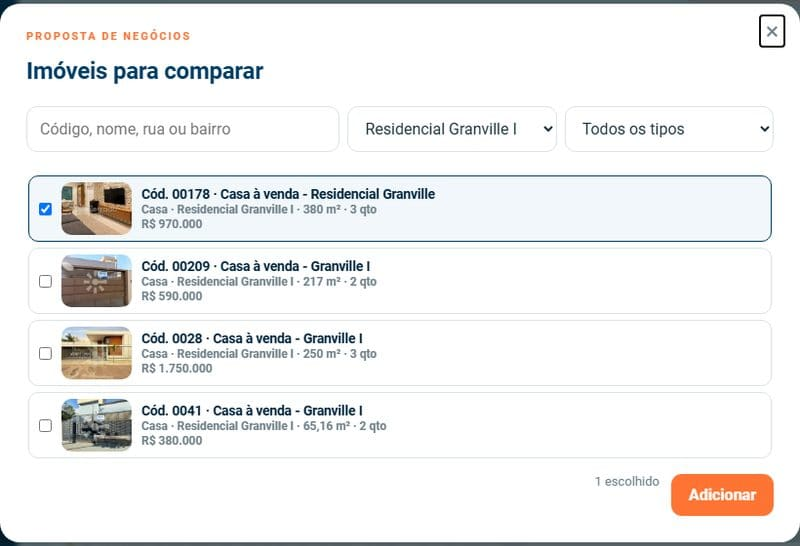
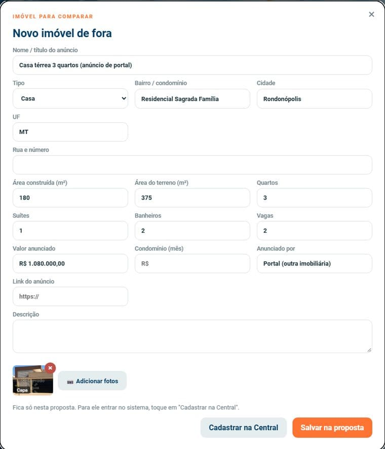
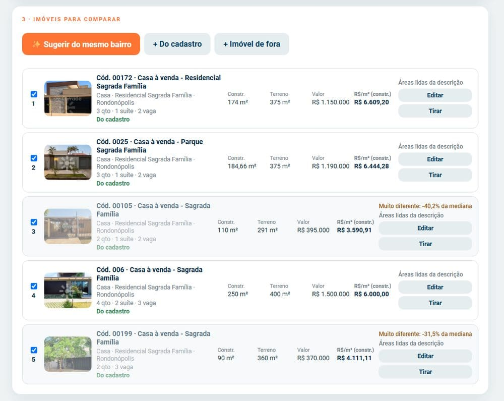
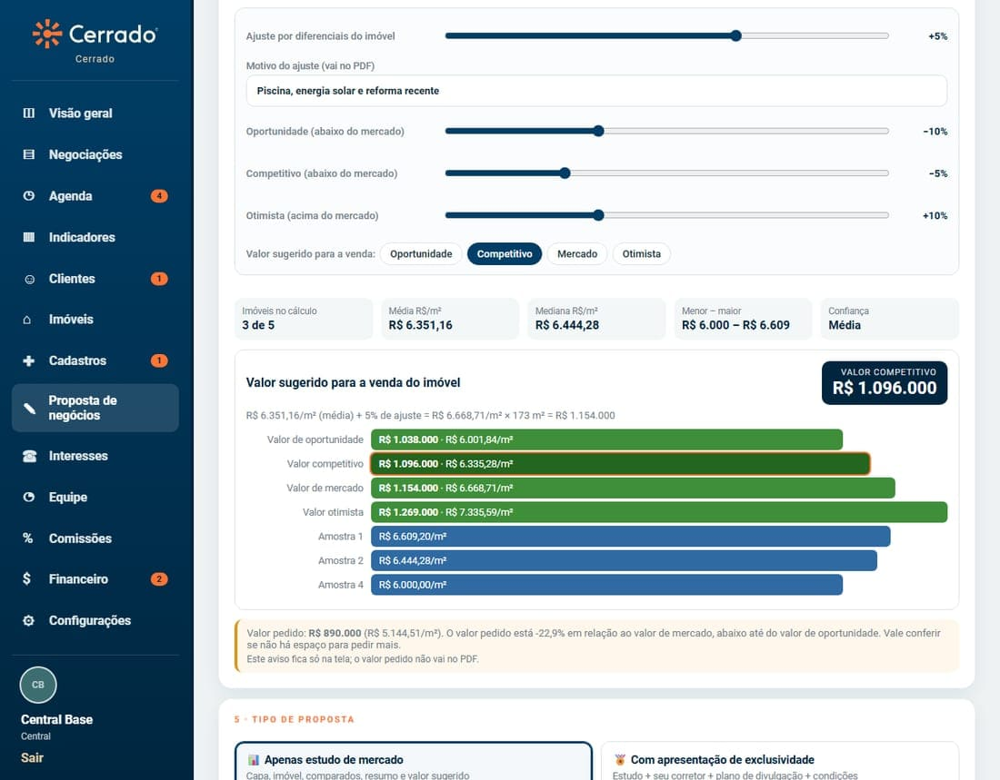
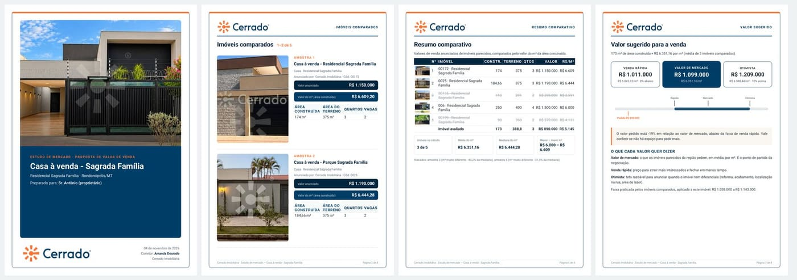

Montar uma proposta de negócios (estudo de mercado)
SKL Gestão Imobiliária · Proposta de negócios
- Objetivo
- Comparar um imóvel com outros parecidos, chegar ao valor do m² e ao valor sugerido, e entregar ao proprietário um PDF com a marca da imobiliária.
- Aplicação
- Captação (definir o preço com o proprietário), renegociação de preço de imóvel parado e orientação de cliente comprador.
- Responsáveis
- Corretores, Central e gestores. O administrador escolhe quem usa em “O que cada tipo de acesso pode fazer” (POP-GI-06).
- Pré-requisitos
- Função “Proposta de negócios” ligada (POP-GI-05). Em cada imóvel comparado: valor e área. No imóvel avaliado: a área.
- Resultado esperado
- Proposta salva no sistema e PDF pronto para imprimir ou enviar, com o valor sugerido e as faixas de oportunidade, competitivo, mercado e otimista.
1. Procedimento
- Abra o menu Proposta de negócios (corretor no celular: aba Propostas, na barra de baixo) e toque em + Nova proposta.
- 1 · Proposta: confira a finalidade (venda ou locação) e preencha para quem é a proposta. Título e corretor já vêm preenchidos; observações e validade são opcionais e vão no PDF.
- 2 · Imóvel avaliado: toque em Escolher do cadastro ou em Imóvel de fora (digitar). Confira a área construída, a área do terreno e o valor pedido; se aparecer o aviso “áreas lidas da descrição”, confira antes de seguir.
- 3 · Imóveis para comparar: use ✨ Sugerir do mesmo bairro (atalho que traz até 6 parecidos), + Do cadastro (qualquer bairro ou cidade) ou + Imóvel de fora (anúncio de outra imobiliária ou portal, com fotos). O ideal é de 4 a 8 imóveis.
- Em cada imóvel: a caixinha marca se entra no cálculo, Editar ajusta área e valor só nesta proposta e Tirar remove.
- 4 · Cálculo e regulação: o resultado aparece na hora. Ajuste os valores e escolha o valor sugerido antes de gerar o PDF (POP-GI-13).
- 5 · Tipo de proposta: Apenas estudo de mercado ou Com apresentação de exclusividade (POP-GI-14).
- Toque em Salvar e depois em 📄 Gerar PDF → Imprimir / salvar PDF.





Como o sistema calcula
| Passo | O que acontece |
|---|---|
| Valor do m² | Valor anunciado ÷ área (construída ou do terreno) de cada imóvel comparado. |
| Fora do comum | Com 3 ou mais imóveis, quem passa de 30% (ajustável) acima ou abaixo da mediana sai do cálculo e aparece riscado. |
| Valor de mercado | Média (ou mediana, conforme a configuração) do valor do m² dos que ficaram, com o ajuste por diferenciais, × área do imóvel avaliado. |
| Oportunidade / Competitivo / Otimista | Valor de mercado 10% abaixo / 5% abaixo / 10% acima (padrão da imobiliária; ajustáveis). |
| Valor pedido | Comparado com o mercado só na tela: acima da faixa, dentro ou abaixo da oportunidade. Vai no PDF só se marcar. |
| Confiança | Baixa com menos de 3 imóveis; boa com 5 ou mais e pouca variação entre eles. |
Cadastrar um imóvel de fora
Um imóvel de fora fica só na proposta. Para ele entrar no sistema, toque em Cadastrar na Central: abre o cadastro normal já preenchido, com as fotos. Ao salvar, ele passa a aparecer como “Do cadastro” na proposta.
O PDF

Capa com a foto do imóvel, ficha do imóvel avaliado, os imóveis comparados (2 por página), resumo comparativo, a página “Valor sugerido para a venda do imóvel” (barras com as quatro faixas e o m² de cada amostra) e a página “Como chegamos neste valor”, com espaço para assinatura. Todas as páginas têm margem branca e moldura, para sair inteiro em qualquer impressora.
2. Pontos de atenção
Mudar área ou valor dentro da proposta não altera o cadastro do imóvel.
O cadastro tem um campo de área só: em muitos imóveis ele guarda o terreno. Por isso o sistema lê a descrição (“174 m² de área construída em terreno de 375 m²”) e avisa “áreas lidas da descrição”. Confira sempre.
Os valores usados são de anúncio, não de negócios fechados. O PDF deixa claro que é uma opinião de mercado do corretor, não um laudo de avaliação (ABNT NBR 14653).
Quem vê a equipe toda vê todas as propostas; os outros veem só as que criaram.
3. Controle do documento
| Elaborado por | Versão | Data | Alteração |
|---|---|---|---|
| SKL Geo Soluções | 2.0 | 05/11/2026 | Corretor passa a usar a proposta (aba Propostas); cálculo com quatro faixas de preço e regulação antes do PDF (POP-GI-13). |